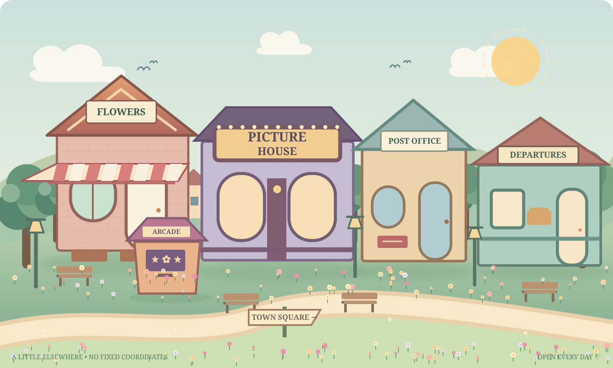

✳ A TINY TOWN · EXCLUSIVELY FOR YOUR RANDOM DAYS
Come in, Maha.
Your little elsewhere is open.
A flower shop, a tiny cinema, letters, and a few things that make absolutely no sense. Pick a door.

Tap a building to go in · Or choose a little detour below.
WELCOME TO THE FLOWER SHOP
A bouquet, just because.
Pick the flowers. Mix whatever colours you fancy. There are no wrong arrangements and absolutely no florist judging you.
PICK YOUR STEMS 0 / 7
Some flowers are for big days. These are for whichever day it happens to be.
Try adding different kinds of flowers. Each one has its own little meaning.
A WINDOW THAT DOESN'T ASK TOO MANY QUESTIONS
What's the weather in your head?
Not the Kuwait forecast. The other kind. Choose whatever feels closest today; you can change your mind in two seconds.
Any kind of day is welcome here.
Tap a little weather report above to open your window.
DELIVERIES TO: MAHA, ANYWHERE
The post office at the end of the road.
It's small, it's rather dramatic about stamps, and it has a few things addressed to you.
Each card has something scribbled on the back. Tap to flip; swipe across to explore on a phone.
POSTMARKS: 0A few letters with wildly different levels of seriousness. Pick any envelope.
FOR YOUR EYES, MOSTLY.ONE TICKET, UNLIMITED REWATCHES
The smallest cinema in the world.
Original production. Extremely tiny budget. Quite a lot of heart. Find a seat.
The Girl Who Collected Firsts
This film contains no real travel footage, no deadlines, and one highly suspicious cloud café.
NO BOARDING PASS REQUIRED
The almost-there travel studio.
Make a tiny travel film from three imaginary shots. No camera. No pressure to post. Just for the fun of thinking, “What if?”
Your next little adventure.
Choose three shots and press play.
DIRECTOR'S DESK ✎
Choose three scenes for your very short film.
Director's note: Not every adventure needs a vlog. Some are best kept for yourself.
HIGHLY IMPORTANT RECREATIONAL NONSENSE
A little bit of play.
Three actual games, zero life lessons. Pick your current level of competitive spirit.
Flower Dash ✿
Catch the blossoms, dodge the storm clouds. Move the basket with a finger, mouse or ← → keys.
Postcard Pairs ✉
Find six matching pairs. The postmaster insists this qualifies as work.
Turn over two cards to find a match.
Pack & Go ✧
An unexpected trip! Choose the three things you'll actually need.
SLIGHTLY USELESS THINGS. LOVELY THINGS.
A cabinet of curious things.
Open a drawer, take the unlabelled door, collect a few stamps. You were always allowed to be nosy here.
LOST & FOUND DEPARTMENT
Tap a drawer. Somebody has been misplacing some very strange objects.
DEFINITELY NOT A SECRET
The unlabelled door.
Nobody knows what lives behind it. It changes its mind occasionally.
A note to future Maha
Write a tiny note and keep it here. It stays on this device, in this browser. No sending, no accounts.
THE POCKET MUSEUM
Proof of pleasant detours.
Not achievements in any serious sense. Just little souvenirs from the places you've visited. Saved here for next time.